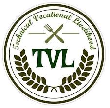
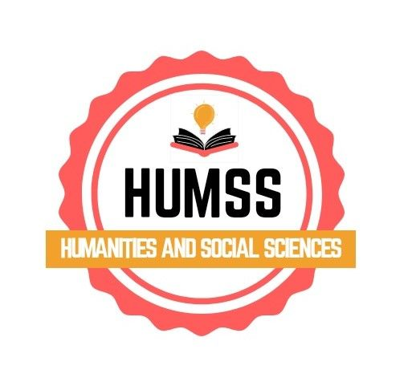
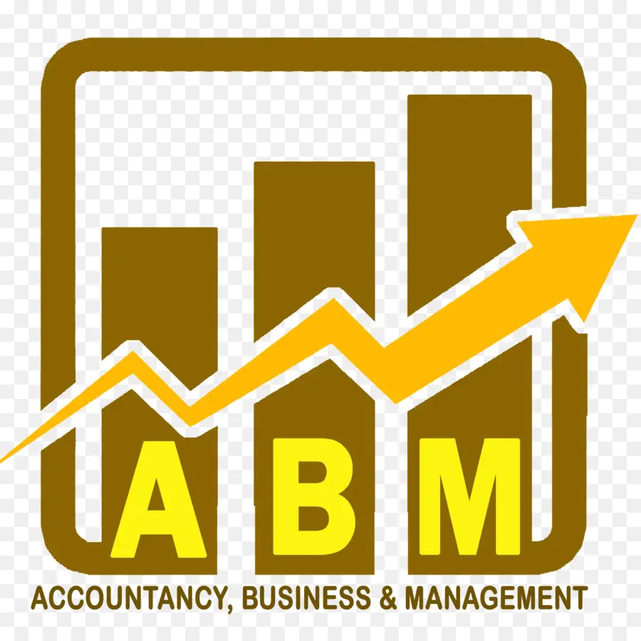
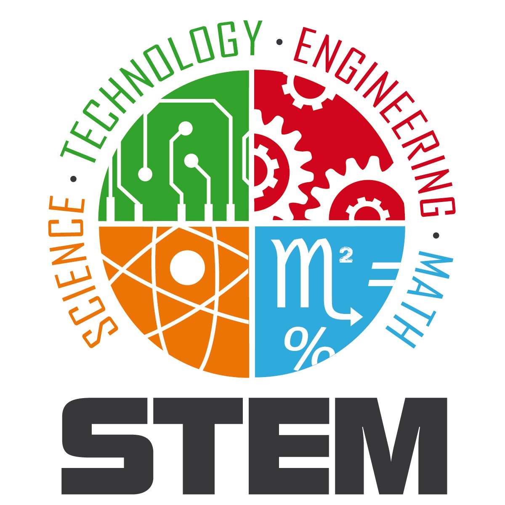
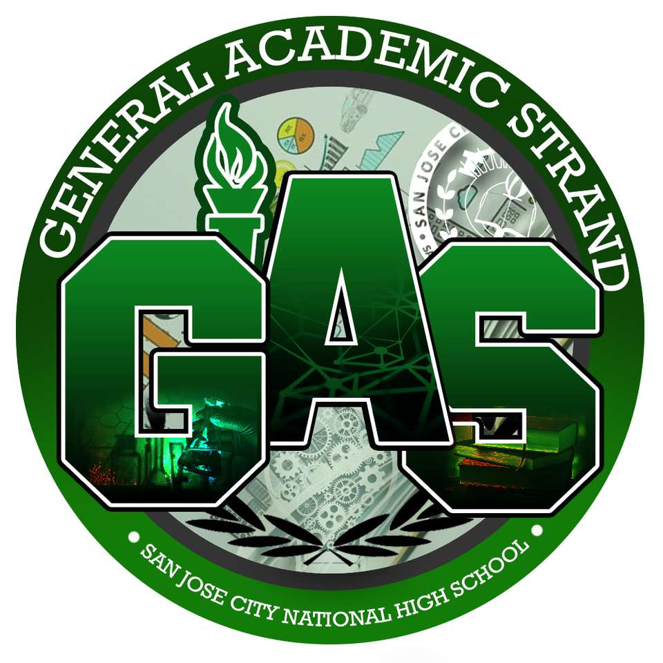

Overview of the TVL Track
The senior high school TVL track is designed for students who wish to start working right after they graduate from senior high school. These vocational courses give students the skills and knowledge they need to get the certifications necessary for work. The TVL track is ideal for those who intend to work abroad as skilled workers.
Objectives of the TVL Track
The Technical-Vocational-Livelihood track is designed to prepare senior high school students for employment after graduation. These vocational courses help students all over the Philippines:
Provide preparation for occupation of future OFWs abroad
Gain the experience and skills they need to earn their Certificates of Competency and National Certifications, which they will need to seek future employment
Enter college with job-ready skills, especially for courses related to their TVL track
Advantages of the TVL Track
The TVL track gives senior high school students access to vocational courses, as not all students want to or can afford to go to college after senior high school. The TVL strand courses gives students:
Possible Career Paths with the TVL Track
Senior high school graduates of the Information Communication and Technology (ICT) with specializations in Computer Programming TVL strand course can have successful careers as the following:
Data Encoder
Programmer
System Analyst
Web Developer
Game Designer
3D Animator
Layout Artist
Mobile App Developer
Software Developer

Get to Know HUMSS Strand
For students entering Senior High School, one of the most important decisions they have to make is choosing a track and strand to specialize in. Unlike in the previous high school format, the current K-12 curriculum allows students to specialize in tracks (further broken down into strands) that will guide them and ease them in their college journeys.
What is HUMSS?
Humanities and Social Sciences is a strand offered to senior high school students under the Academics track. The HUMSS Senior High School strand is designed for students who intend to take up journalism, communication arts, liberal arts, education, and other social-science related courses in college. Because these courses revolve heavily around interacting with other people, the Senior High School HUMSS strand is all about improving students’ reading, writing, and speaking skills.
Careers in Humanities and Social Sciences Graduates of the HUMSS strand can have successful careers as the following:
Journalist
Because HUMSS is focused on research and writing, many HUMSS graduates are able to use the skills they’ve learned to launch successful writing careers, including ones in many broadsheets and online publications.
Lawyer
As a HUMSS student, you are expected to be adept not just at writing but in speaking as well. This makes HUMSS the perfect foundation for those who want to become great lawyers in the future. Exposure to core subjects like world politics and community development also help students build a strong moral foundation which they will need in their litigation career.
Education
Graduates of the HUMSS strand can also enter the academe as teachers or professors. Some subjects they can teach include literature, philosophy, writing, English, Philippine studies, or guidance counselling.
Politics
For the chosen few, HUMSS is a good background for those who seek to enter public office. Years spent learning about public speaking and community development will be essential in your position, no matter how big or small this may be.

Overview of the ABM Strand
The Accountancy, Business and Management (ABM) strand marries creativity, mathematical application, and business sense to prepare the best business professionals of tomorrow. Taking ABM subjects in senior high school will introduce students to the concepts of financial management, business management, corporate operations, and accounting. Students who select this route will be prepared for colourful careers as managers, accountants, and business owners. Students who select this route will be prepared for colorful careers as managers, accountants, and business owners. These ABM courses will equip them with the necessary industry know-how and skills to perform well in their professions and run their businesses smoothly.
Designed to prepare students
who are inclined to take college degrees related to business and management programs, taking ABM in senior high school will be about the basic principles of the various functional areas of business such as marketing, finance and accounting, information and technology, and entrepreneurship. The ABM strand is the perfect combination of practical skills and application, as well as shaping senior high school students to adopt the right mindset for crisis management and problem solving on the job and behind their businesses.
Advantages of the ABM Strand
The ABM strand equips senior high school students with the necessary skills and knowledge from the converging subject matter of Accounting, Business, and Management to maximize their business-mindedness and set them up for success. Enrolling in the ABM Strand yields the following benefits:
Builds up the confidence of senior high school students when communicating their ideas, allowing them to have more faith in their concepts and ingenuity during their projects in their ABM courses
Instills values of honesty and good business practice that are necessary for a field that deals with finances and business relations, while adopting a mindset that actively seeks solutions for any crisis that comes their way
Hones their math skills for quick and transparent computations that will allow them to make sound business decisions and perform accounting duties with attention to detail and accuracy down the line when entering their careers
Possible Career Paths with ABM Strand
Students enrolled in the ABM strand in senior high school can lead successful and highly competitive careers in the following professions:
Entrepreneurs
Advertising Professionals
Marketing or Sales Representatives
Accountants
Account Managers
Bank Tellers
Restaurateurs
Corporate Managers
Retail Managers
Financial Advisers
Economists

Overview of the STEM Strand
Designed to prepare students who express keen interest in taking college degrees focused on Science, Technology, Engineering, and Mathematics (STEM), senior high school students will be exposed to learning activities that will hone their knowledge and skills in analyzing data, understanding real-world impacts, and conducting research.
The Objectives of the STEM Strand
The STEM strand is designed to nurture senior high school students curiosity, problem-solving abilities, and communication skills. With the STEM strand, graduates will:
Have developed a keener sense of creativity and ingenuity which is essential in coming up with new ideas and innovations
Be more inclined to experiment and be more open to risks
Be able to apply the knowledge they ve learned in class in everyday scenarios, most especially in their future courses
Have the foundational competencies that will allow them to excel in their chosen courses and, eventually, help them qualify for jobs in the STEM strand
Possible Jobs in the STEM Strand
Our senior high school students go on to find relevant STEM strand jobs that match the skills and knowledge they’ve acquired from our curriculum. They will find plenty of opportunities, both in employment and in further studies in higher education. Senior high school graduates have found fulfilling and successful careers in the following jobs in the STEM strand:
Pilot
Architect
Astrophysicist
Biologist
Chemist
Industrial Engineer
Chemical Engineer
Dentist
Nutritionist
Doctor
Marine Engineer

Overview of GAS
Designed to prepare students who are more inclined to general areas of study rather than specialized fields, GAS will present the option for SHS students to take their electives from specialized subjects of any other strands.
The Objectives of the GAS
The GAS is ideal for those who are still undecided about which career path they want to pursue in the future. GAS aims to:
Cover various subjects and topics including Humanities, Social Sciences, Organization, and Management
Give students the freedom and ability to pursue any undergraduate program under the three other strands in the future
Develop your communication and writing skills
Learn about Empowerment Technologies
Advantages of the GAS
The GAS gives senior high school students exposure a variety of different subjects, allowing them to explore each one to see which will be the best fit for them. With GAS, students can:
Take a wide selection of subjects including Disaster Preparedness, Risk Reduction, And Organization Management
Enjoy a balanced mix of subjects from the other SHS strands namely HUMSS, ABM, and STEM
Make a more informed decision regarding their undergraduate program and future career path because they have learned a host of different subjects
Possible Career Paths with the GAS
Senior high school graduates of the GAS can have successful careers as the following:
Educators
Businessmen
Lawyers
Professors
Psychologists>
Doctors
Writers
Journalists
Multimedia Designers
Interior Designers
Social Workers
© 2025 Rosales National High School